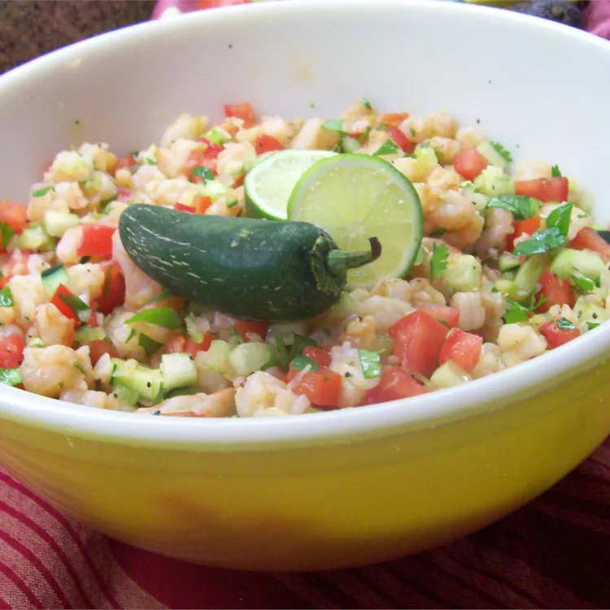

Avocado Shrimp Ceviche

Description
This classic shrimp ceviche recipe cures fresh shrimp in lime juice.
The shrimp is mixed with juicy tomatoes, onion, cilantro, avocado, and a
special sauce for a delicious, light, and refreshing appetizer. Perfect
on a sunny day with an ice-cold beer on the side. Of course, most Latinos
(especially my wife) can make a good ceviche blindfolded on any day, rain
or shine!
Ingredients
- 2 pounds large shrimp - peeled, deveined and chopped
- ¾ cup fresh lime juice
- 5 roma (plum) tomatoes, diced
- 1 white onion, finely chopped
- ½ cup chopped fresh cilantro
- 1 tablespoon Worcestershire sauce
- 1 tablespoon ketchup
- 1 teaspoon hot pepper sauce
- salt and pepper to taste
- 1 avocado - peeled, pitted and diced
- 16 saltine crackers
Steps
- Place the shrimp and lime juice into a large bowl, and stir to coat.
Let stand for about 5 minutes, or until shrimp are opaque. The lime
juice will cure them. Mix in the tomatoes, onion, and cilantro until
coated with lime juice; cover and refrigerate for 1 hour.
- Remove from the refrigerator, and mix in the Worcestershire sauce,
ketchup, hot sauce, salt and pepper. We have our own hot sauce recipe,
but you can use whatever hot sauce you like, or leave it out and let
people add their own when serving.
- Serve in glass tumblers and top with avocado pieces. Set out extra
Worcestershire sauce, ketchup, lime wedges and hot sauce for people
to individualize their dish. Serve with saltine crackers.
Home